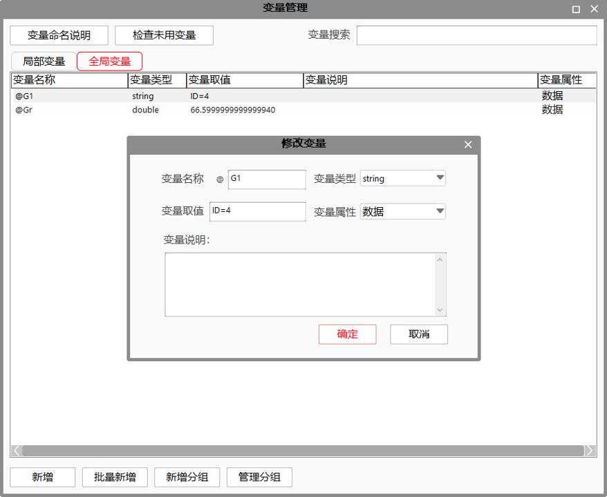
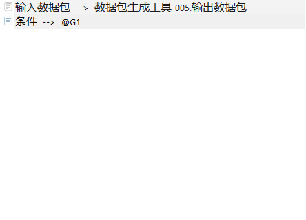

Cập nhật một hoặc nhiều dòng trong bảng cơ sở dữ liệu liên kết, có thể cập nhật một cột hoặc nhiều cột. Thường sử dụng công cụ tạo gói dữ liệu cùng với công cụ cập nhật cơ sở dữ liệu.
| Phân loại | Tên tham số | Mô tả tham số |
|---|---|---|
| Cửa sổ Thuộc tính | Tên bảng đích | Tên bảng trong cơ sở dữ liệu cần cập nhật. |
| Số lượng dữ liệu cập nhật | Số cột trong bảng cần cập nhật. Lưu ý: gói dữ liệu tối đa hỗ trợ 64 dữ liệu, nên số cột không vượt quá 64. | |
| Tên cột cập nhật | Tối đa 64 cột, có thể chọn tùy theo thực tế, xem ghi chú trên. | |
| Cửa sổ Hình ảnh | Không có | Không có |
| Dây dữ liệu | Nhập gói dữ liệu | Dữ liệu cột cập nhật có thể là một hoặc nhiều giá trị, nên sử dụng đầu ra từ "công cụ tạo gói dữ liệu" làm giá trị cập nhật. |
| Điều kiện | Giống với điều kiện truy vấn trong "công cụ truy vấn dữ liệu". Thường dùng biến chuỗi mới làm điều kiện truy vấn. | |
| Giao diện Nâng cao | Không có | Không có |
| Phân loại | Tên tham số | Mô tả tham số |
|---|---|---|
| Cửa sổ Giám sát | Kết quả thực thi | Kết quả thực thi của công cụ. |
| Thời gian thực thi | Thời gian công cụ thực thi. | |
| Cửa sổ Hình ảnh | Không có | Không có |
| Dây dữ liệu | Không có | Không có |
Không có
Công cụ cập nhật và truy vấn cơ sở dữ liệu đều cần kết nối đến cơ sở dữ liệu. Cập nhật sẽ thay đổi dữ liệu của các bản ghi thỏa mãn điều kiện, bản ghi có thể là một hoặc nhiều, do điều kiện (truy vấn) quyết định. Cách sử dụng nhiều điều kiện truy vấn có thể tham khảo trong công cụ truy vấn cơ sở dữ liệu. Xem Hình 1 về thiết kế điều kiện (truy vấn) và Hình 2 về kết nối dây dữ liệu.
Không nên cập nhật cột ID vì đây là định danh duy nhất phân biệt các bản ghi.
Khi cập nhật nhiều cột, kiểu dữ liệu của mỗi cột phải trùng với kiểu dữ liệu đầu ra tương ứng của công cụ tạo gói dữ liệu để đảm bảo kết quả cập nhật đúng. Ví dụ, cột thứ ba có kiểu dữ liệu là double thì đầu ra thứ ba của công cụ tạo gói dữ liệu cũng phải là double; nếu là bool sẽ gây lỗi.
Các thiết lập trong giao diện thuộc tính có thể tham khảo công cụ truy vấn dữ liệu.


参见“\Samples\数据库相关工具.gvp”。